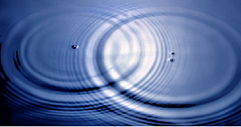
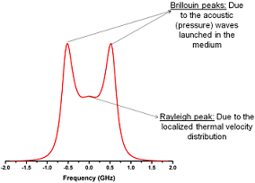

Coherent Rayleigh-Brillouin Scattering (CRBS)

Figure 1: Interference in water. Light interferes more or less in the same way

Figure 2: Typical CRBS spectrum og a gas at a pressure of 1 atmosphere.